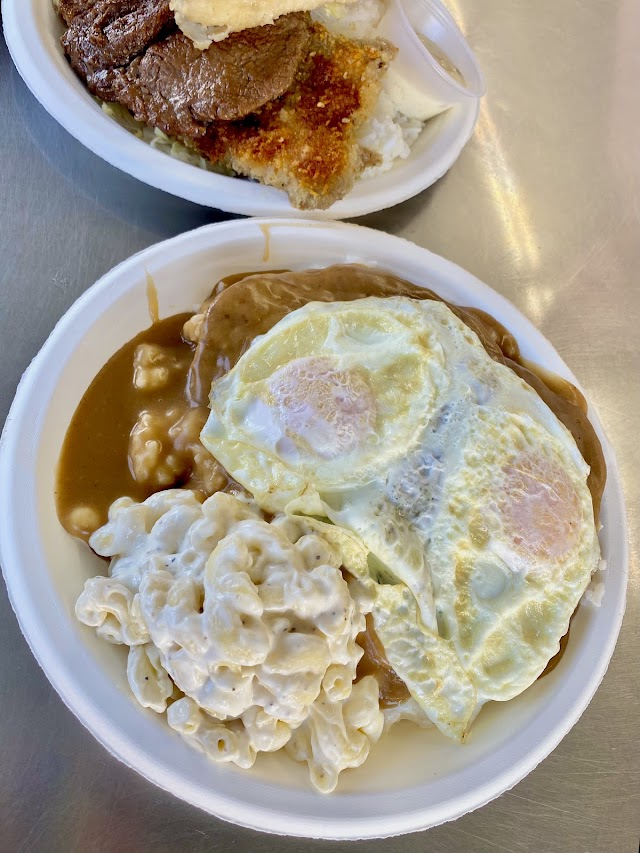
| 営業時間 | 月・火・水・木・金・土・日 7:00〜21:00 |
|---|---|
| 定休日 | なし(要最終確認) |
| 住所 | 3308 Kanaina Ave, Honolulu, HI 96815 |
| 予約 | 不要 — ☎ (808) 737-0177 ／ 公式サイト |
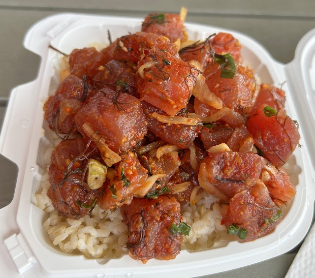
| 営業時間 | 火・水・木・金・土 9:00〜16:00 |
|---|---|
| 定休日 | 月・日曜 |
| 住所 | 747 Kapahulu Ave, Honolulu, HI 96816 |
| 予約 | 不可 — ☎ (808) 732-4806 ／ 公式サイト |
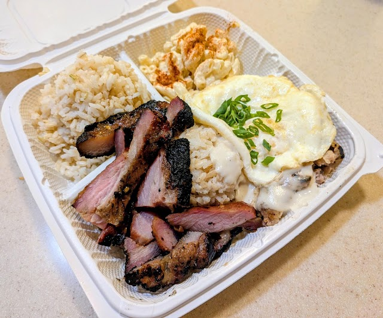
| 営業時間 | 月・火・水・木・金・土・日 11:00〜20:00 |
|---|---|
| 定休日 | なし(要最終確認) |
| 住所 | 567 Kapahulu Ave, Honolulu, HI 96815 |
| 予約 | 不要 — ☎ (808) 913-2100 ／ 公式サイト |
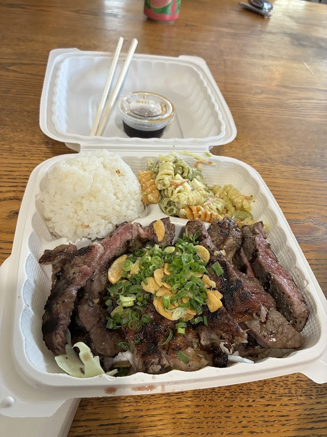
| 営業時間 | 月・火・水・木・金・土・日 11:00〜20:00 |
|---|---|
| 定休日 | なし(要最終確認) |
| 住所 | 3046 Monsarrat Ave, Honolulu, HI 96815 |
| 予約 | 不要 — ☎ (808) 732-4001 ／ 公式サイト |
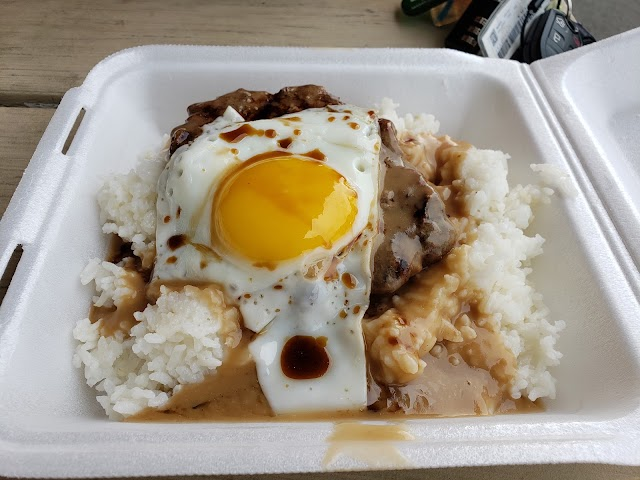
| 営業時間 | 月・火・水・木・金・土・日 7:30〜20:00 |
|---|---|
| 定休日 | なし(要最終確認) |
| 住所 | 3158 Monsarrat Ave, Honolulu, HI 96815 |
| 予約 | 不要 — ☎ (808) 732-0077 ／ 公式サイト |
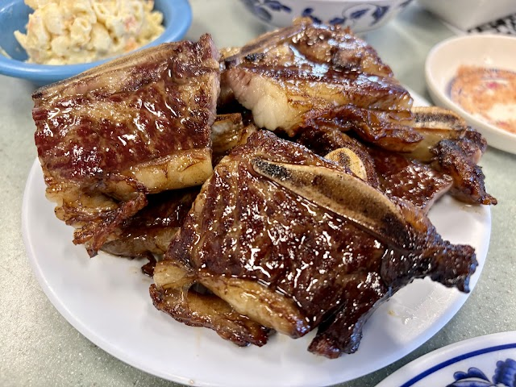
| 営業時間 | 火・水・木・金 10:00〜19:30 |
|---|---|
| 定休日 | 月・土・日曜 |
| 住所 | 1240 N School St, Honolulu, HI 96817 |
| 予約 | 不可 — ☎ (808) 845-8044 ／ 公式サイト |
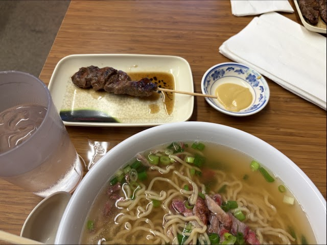
| 営業時間 | 火・水・木・金 10:00〜20:00 ／ 土 10:00〜15:00 |
|---|---|
| 定休日 | 月・日曜 |
| 住所 | 1256 N King St, Honolulu, HI 96817 |
| 予約 | 不可 — ☎ (808) 841-9983 ／ 公式サイト |
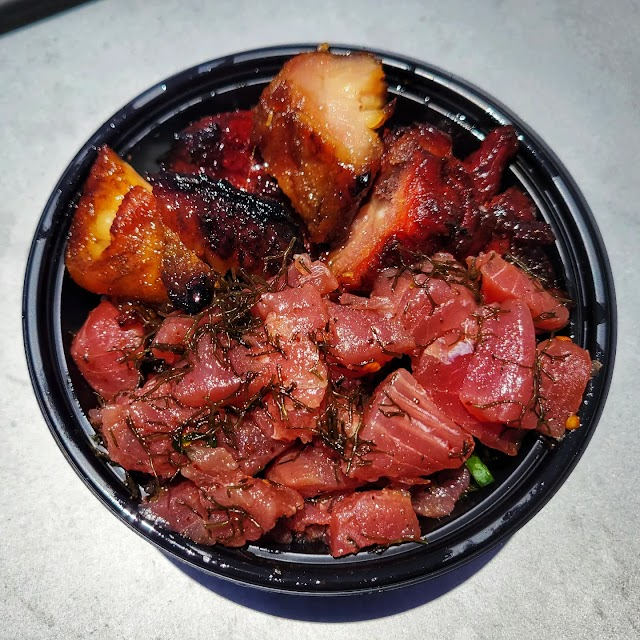
| 営業時間 | 月・火・水・木・金・土 10:00〜14:00 |
|---|---|
| 定休日 | 日曜 |
| 住所 | 267 Mokauea St, Honolulu, HI 96819 |
| 予約 | 不可 — ☎ (808) 841-1921 ／ 公式サイト |
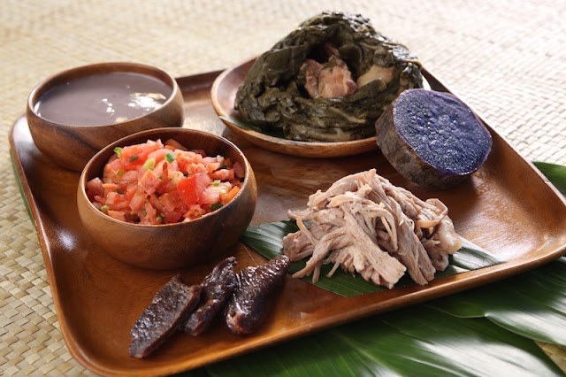
| 営業時間 | 月・火・水・木・金 9:30〜18:00 ／ 土 9:30〜16:00 |
|---|---|
| 定休日 | 日曜 |
| 住所 | 1286 Kalani St, Honolulu, HI 96817 |
| 予約 | 不要 — ☎ (808) 841-4885 ／ 公式サイト |
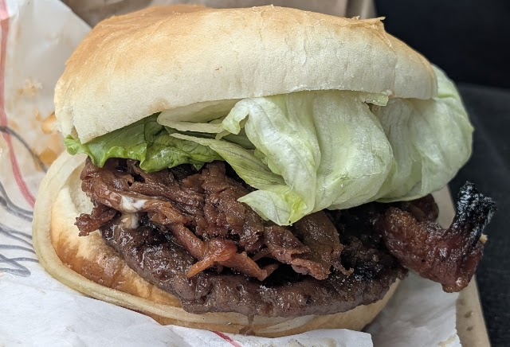
| 営業時間 | 水・木・金 10:00〜16:30 ／ 土・日 9:00〜16:30 |
|---|---|
| 定休日 | 月・火曜 |
| 住所 | 3104 Waialae Ave, Honolulu, HI 96816 |
| 予約 | 不可 — ☎ (808) 734-3350 ／ 公式サイト |
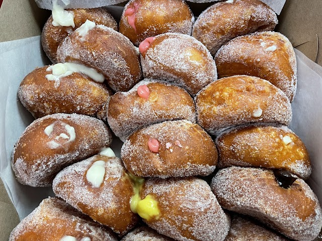
| 営業時間 | 月・火・水・木・金・土・日 5:30〜19:00 |
|---|---|
| 定休日 | なし(要最終確認) |
| 住所 | 933 Kapahulu Ave, Honolulu, HI 96816 |
| 予約 | 不要 — ☎ (808) 737-5591 ／ 公式サイト |
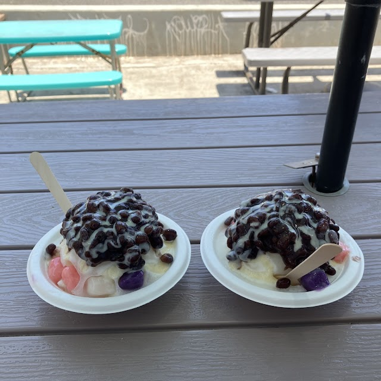
| 営業時間 | 月・水・木・金・土・日 11:00〜18:00 |
|---|---|
| 定休日 | 火曜 |
| 住所 | 3113 Mokihana St, Honolulu, HI 96816 |
| 予約 | 不要 — 公式サイト |
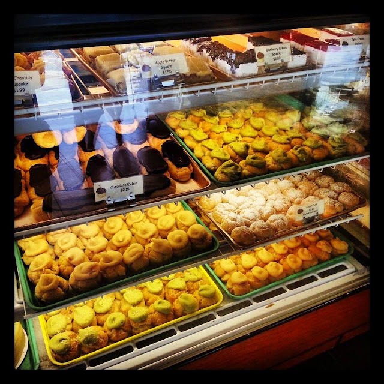
| 営業時間 | 月・火・水・木・金・土・日 6:00〜22:00 |
|---|---|
| 定休日 | なし(要最終確認) |
| 住所 | 515 N Kuakini St, Honolulu, HI 96817 |
| 予約 | 不可 — ☎ (808) 531-1651 ／ 公式サイト |
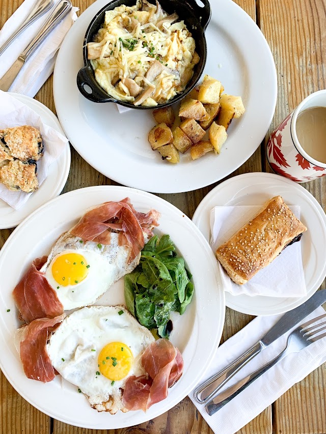
| 営業時間 | 火・水・木・金 7:00〜14:00 ／ 土・日 8:00〜14:00 |
|---|---|
| 定休日 | 月曜 |
| 住所 | 2955 E Manoa Rd, Honolulu, HI 96822 |
| 予約 | 不可 — ☎ (808) 673-0065 ／ 公式サイト |
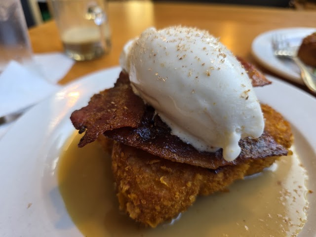
| 営業時間 | 月 8:00〜14:00, 17:00〜21:00 ／ 火・水・木 8:00〜14:00 ／ 金・土・日 7:00〜14:00, 17:00〜21:00 |
|---|---|
| 定休日 | なし(要最終確認) |
| 住所 | 1120 12th Ave #100, Honolulu, HI 96816 |
| 予約 | 推奨 — ☎ (808) 732-8920 ／ 公式サイト ／ 予約サイト |
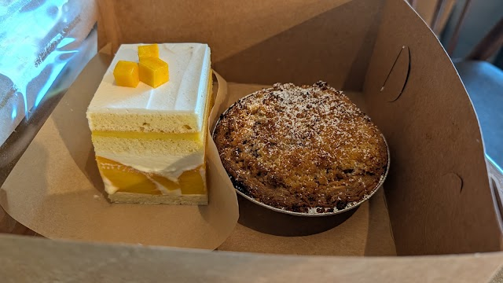
| 営業時間 | 月・火・水・木・金 6:30〜14:00 ／ 土・日 7:00〜14:00 |
|---|---|
| 定休日 | なし(要最終確認) |
| 住所 | 3408 Waialae Ave Ste 103, Honolulu, HI 96816 |
| 予約 | 不要 — ☎ (808) 367-0757 ／ 公式サイト |
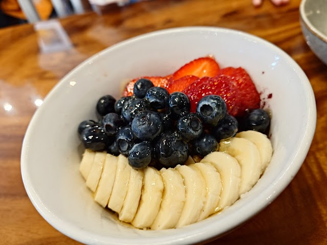
| 営業時間 | 月・火・水・木・金・土・日 7:00〜15:00 |
|---|---|
| 定休日 | なし(要最終確認) |
| 住所 | 3045 Monsarrat Ave, Honolulu, HI 96815 |
| 予約 | 不要 — ☎ (808) 739-0999 ／ 公式サイト |
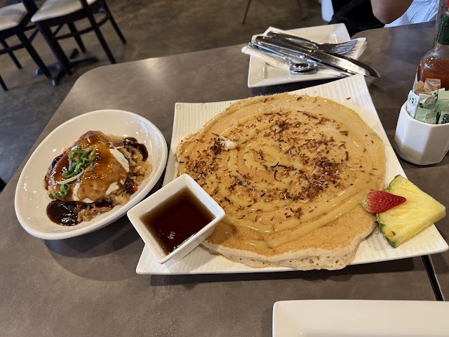
| 営業時間 | 月・火・水・木・金・土・日 7:00〜14:30 |
|---|---|
| 定休日 | なし(要最終確認) |
| 住所 | Koko Marina Center Building E, 7192 Kalanianaʻole Hwy Ste D-101, Honolulu, HI 96825 |
| 予約 | 不要 — ☎ (808) 888-7716 ／ 公式サイト |
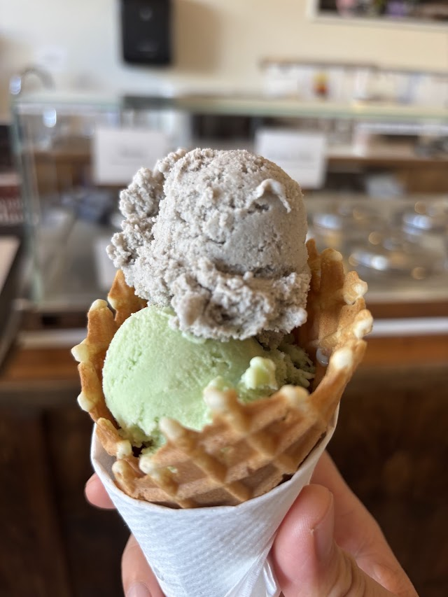
| 営業時間 | 月・火・水・木・日 11:00〜22:00 ／ 金・土 11:00〜23:00 |
|---|---|
| 定休日 | なし(要最終確認) |
| 住所 | 1142 12th Ave, Honolulu, HI 96816 |
| 予約 | 不要 — ☎ (808) 732-2800 ／ 公式サイト |
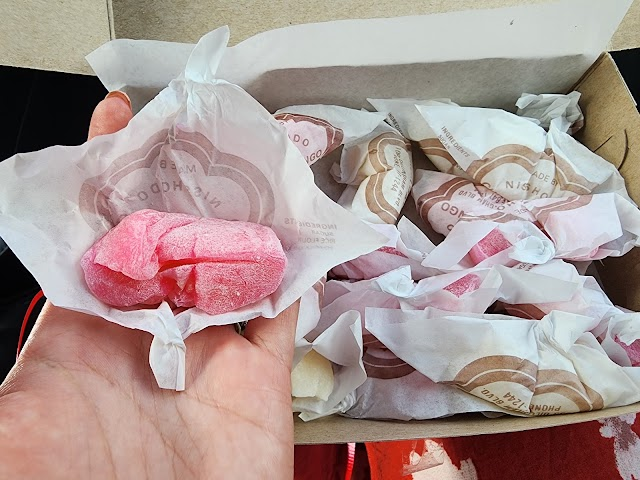
| 営業時間 | 月・火・水・木・金・土 7:00〜14:00 |
|---|---|
| 定休日 | 日曜 |
| 住所 | Bldg I-5, 1095 Dillingham Blvd I-6, Honolulu, HI 96817 |
| 予約 | 不要 — ☎ (808) 847-1244 ／ 公式サイト |
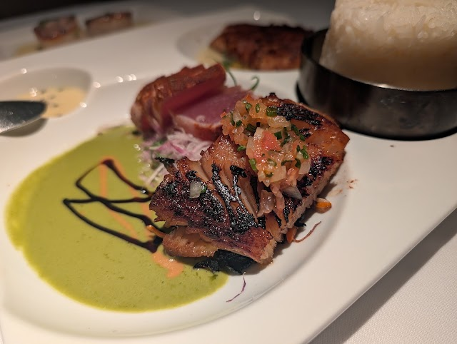
| 営業時間 | 月・火・水・木・日 16:30〜21:00 ／ 金・土 16:30〜21:30 |
|---|---|
| 定休日 | なし(要最終確認) |
| 住所 | 6600 Kalanianaʻole Hwy Ste 110, Honolulu, HI 96825 |
| 予約 | 要 — ☎ (808) 396-7697 ／ 公式サイト ／ 予約サイト |
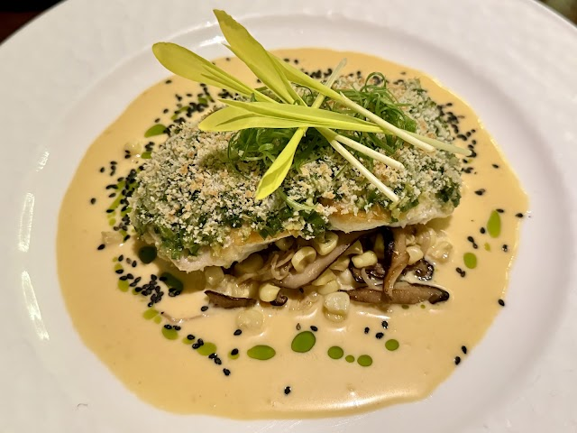
| 営業時間 | 火・水・木・金・土 17:00〜22:00 ／ 日 9:00〜13:00 |
|---|---|
| 定休日 | 月曜 |
| 住所 | Kahala Resort, 5000 Kahala Ave #5000, Honolulu, HI 96816 |
| 予約 | 要 — 公式サイト |
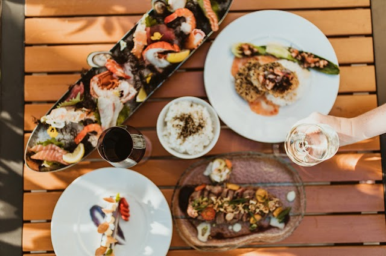
| 営業時間 | 月・火・木・金・土・日 6:30〜11:00, 11:30〜14:00, 17:00〜20:30 ／ 水 6:30〜11:00, 12:00〜14:00, 17:00〜20:30 |
|---|---|
| 定休日 | なし(要最終確認) |
| 住所 | Kahala Resort, 5000 Kahala Ave #5000, Honolulu, HI 96816 |
| 予約 | 推奨 — ☎ (808) 739-8760 ／ 公式サイト ／ 予約サイト |
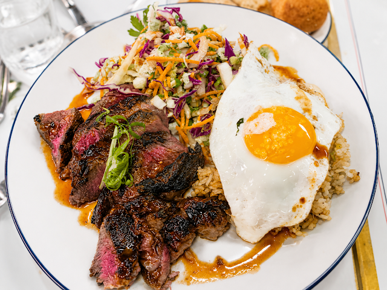
| 営業時間 | 月・火・水・木・金・土 11:00〜21:00 ／ 日 16:00〜21:00 |
|---|---|
| 定休日 | なし(要最終確認) |
| 住所 | 2 N Hotel St, Honolulu, HI 96817 |
| 予約 | 推奨 — ☎ (808) 369-1390 ／ 公式サイト ／ 予約サイト |
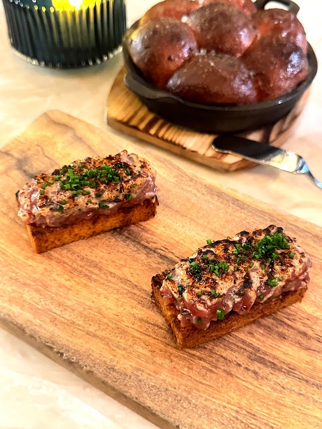
| 営業時間 | 月・火・水・木・金・土 17:30〜21:30 |
|---|---|
| 定休日 | 日曜 |
| 住所 | 75 N King St, Honolulu, HI 96817 |
| 予約 | 要 — ☎ (808) 200-5412 ／ 公式サイト ／ 予約サイト |
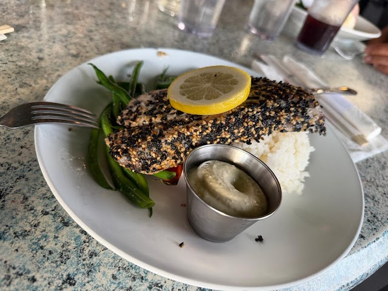
| 営業時間 | 月・火・水・木・金・土 6:30〜21:00 ／ 日 10:00〜21:00 |
|---|---|
| 定休日 | なし(要最終確認) |
| 住所 | 1129 N Nimitz Hwy, Honolulu, HI 96817 |
| 予約 | 可 — ☎ (808) 540-1377 ／ 公式サイト ／ 予約サイト |
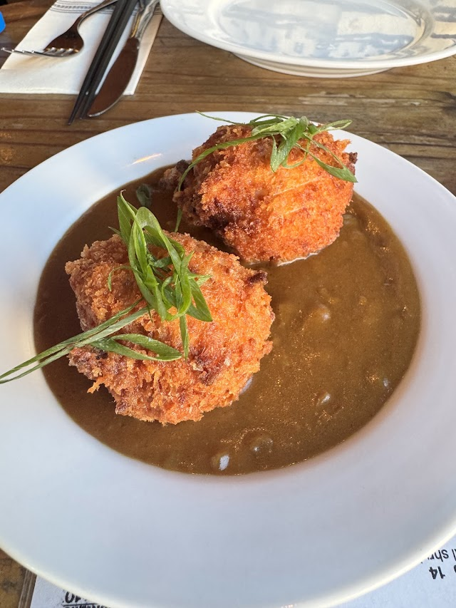
| 営業時間 | 火・水・木 17:00〜21:00 ／ 金 17:00〜21:30 ／ 土 9:30〜14:00, 17:00〜21:30 ／ 日 9:30〜14:00, 17:00〜21:00 |
|---|---|
| 定休日 | 月曜 |
| 住所 | 3452 Waialae Ave, Honolulu, HI 96816 |
| 予約 | 推奨 — ☎ (808) 737-6000 ／ 公式サイト ／ 予約サイト |
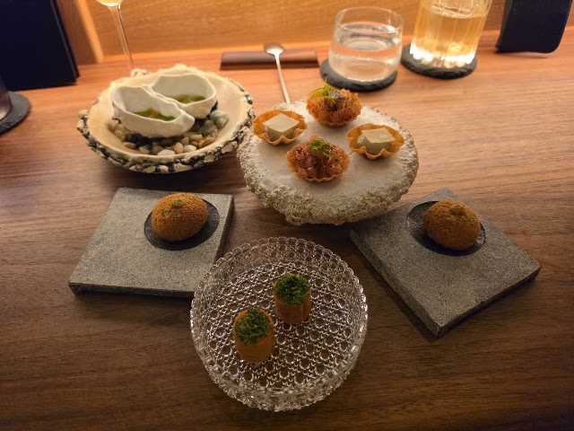
| 営業時間 | 火・水・木・金・土 18:00〜18:30 |
|---|---|
| 定休日 | 月・日曜 |
| 住所 | 1108 12th Ave C, Honolulu, HI 96816 |
| 予約 | 要 — ☎ (808) 888-0884 ／ 公式サイト ／ 予約サイト |
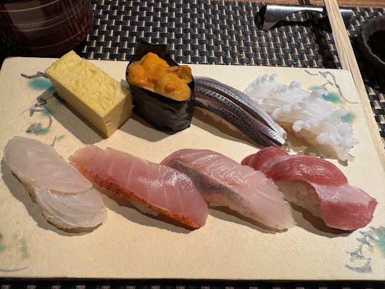
| 営業時間 | 月・火・水・木・金・土・日 11:00〜14:00, 16:30〜21:00 |
|---|---|
| 定休日 | なし(要最終確認) |
| 住所 | 4210 Waialae Ave, Honolulu, HI 96816 |
| 予約 | 推奨 — ☎ (808) 425-4143 ／ 公式サイト ／ 予約サイト |
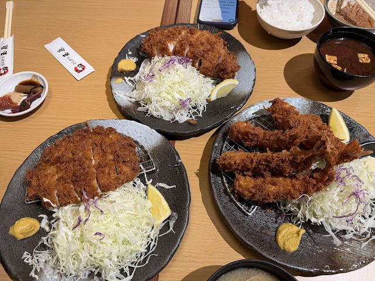
| 営業時間 | 月・水・木・金 16:00〜21:30 ／ 土・日 11:00〜14:00, 17:00〜21:30 |
|---|---|
| 定休日 | 火曜 |
| 住所 | 449 Kapahulu Ave, Honolulu, HI 96815 |
| 予約 | 要 — ☎ (808) 922-1212 ／ 公式サイト |
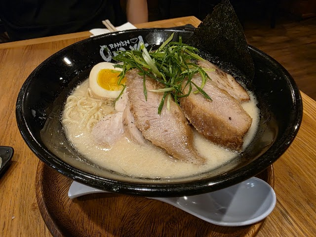
| 営業時間 | 月・火・水・木・金・土・日 11:00〜22:00 |
|---|---|
| 定休日 | なし(要最終確認) |
| 住所 | 611 Kapahulu Ave, Honolulu, HI 96815 |
| 予約 | 不要 — ☎ (808) 425-4415 ／ 公式サイト |
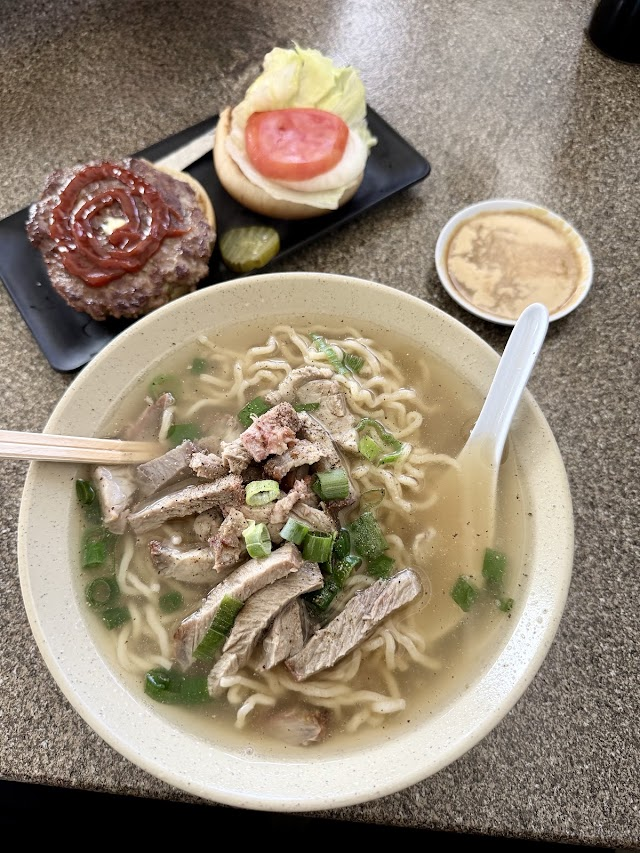
| 営業時間 | 月 11:00〜21:00 ／ 火・水・木・日 8:00〜21:00 ／ 金・土 8:00〜22:00 |
|---|---|
| 定休日 | なし(要最終確認) |
| 住所 | 2746 Kaimuki Ave, Honolulu, HI 96816 |
| 予約 | 不要 — ☎ (808) 732-1656 ／ 公式サイト |
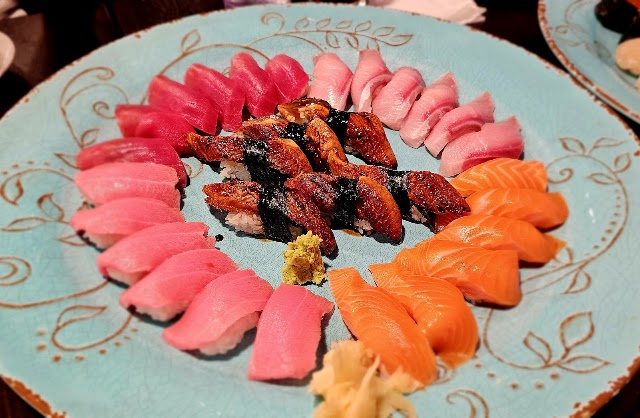
| 営業時間 | 月・火・水・木・金・土・日 11:30〜20:00 |
|---|---|
| 定休日 | なし(要最終確認) |
| 住所 | 524 Ohohia St, Honolulu, HI 96819 |
| 予約 | 要 — ☎ (808) 837-7774 ／ 公式サイト ／ 予約サイト |
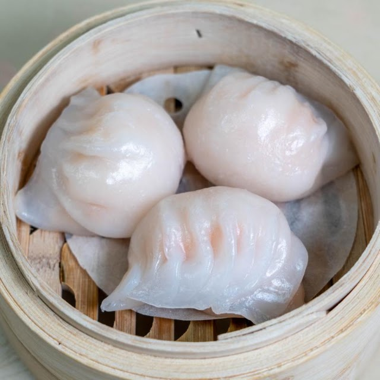
| 営業時間 | 月・火・水・木・金 9:00〜20:00 ／ 土・日 8:00〜20:00 |
|---|---|
| 定休日 | なし(要最終確認) |
| 住所 | 1170 Nuuanu Ave #102, Honolulu, HI 96817 |
| 予約 | 可 — ☎ (808) 531-3268 ／ 公式サイト |
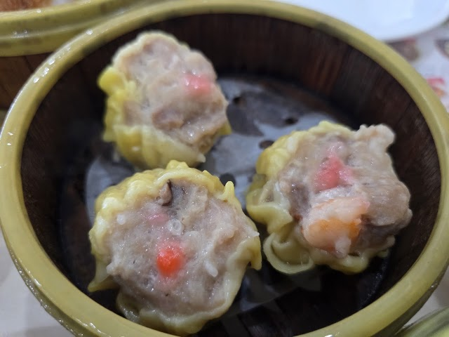
| 営業時間 | 月・水・木・金・土・日 8:00〜14:00 |
|---|---|
| 定休日 | 火曜 |
| 住所 | 100 N Beretania St, Honolulu, HI 96817 |
| 予約 | 不要 — ☎ (808) 523-9168 |
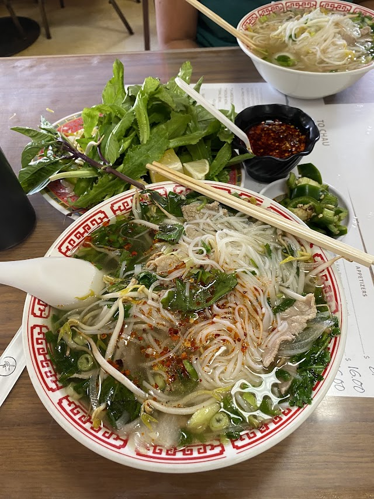
| 営業時間 | 月・火・水・木・金・土・日 9:30〜14:30 |
|---|---|
| 定休日 | なし(要最終確認) |
| 住所 | 1007 River St, Honolulu, HI 96817 |
| 予約 | 不可 — ☎ (808) 533-4549 |
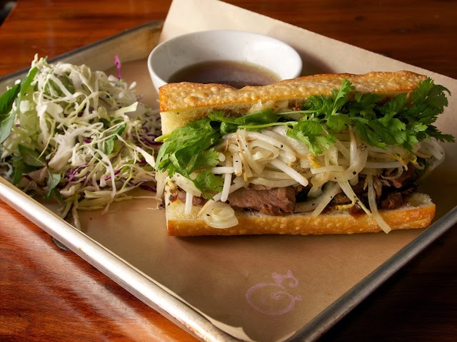
| 営業時間 | 火 17:00〜21:30 ／ 水・木・金・土 11:00〜14:30, 17:00〜21:30 ／ 日 11:00〜14:30 |
|---|---|
| 定休日 | 月曜 |
| 住所 | 3650 Waialae Ave, Honolulu, HI 96816 |
| 予約 | 推奨 — ☎ (808) 585-8255 ／ 公式サイト ／ 予約サイト |
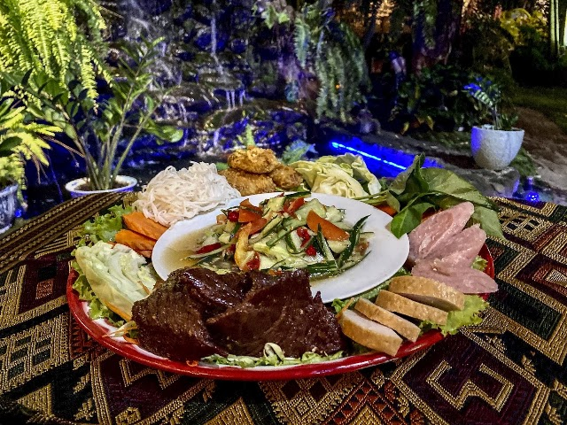
| 営業時間 | 月・火・水・木・日 10:00〜15:00, 16:00〜20:30 ／ 金・土 10:00〜15:00, 16:00〜21:30 |
|---|---|
| 定休日 | なし(要最終確認) |
| 住所 | 66 N Hotel St, Honolulu, HI 96817 |
| 予約 | 推奨 — ☎ (808) 536-5300 ／ 公式サイト |
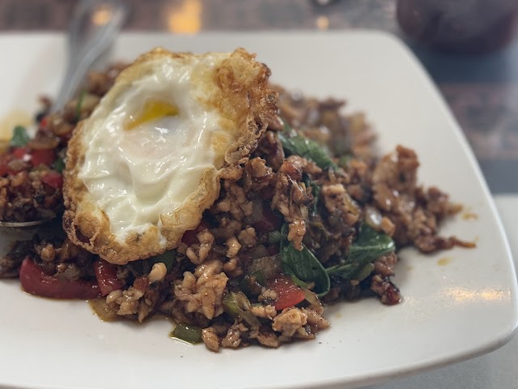
| 営業時間 | 月・火・水・木・金・土・日 10:00〜20:45 |
|---|---|
| 定休日 | なし(要最終確認) |
| 住所 | 2929 Kapiolani Blvd, Honolulu, HI 96826 |
| 予約 | 可 — ☎ (808) 735-4152 ／ 公式サイト |
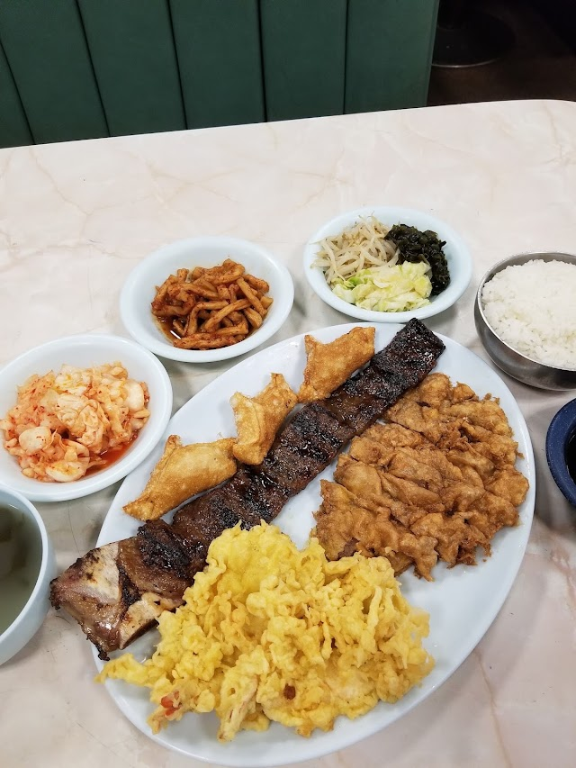
| 営業時間 | 月・水・木・金・土・日 10:30〜19:45 |
|---|---|
| 定休日 | 火曜 |
| 住所 | 3569 Waialae Ave Conference Room, Honolulu, HI 96816 |
| 予約 | 不要 — ☎ (808) 737-7733 |
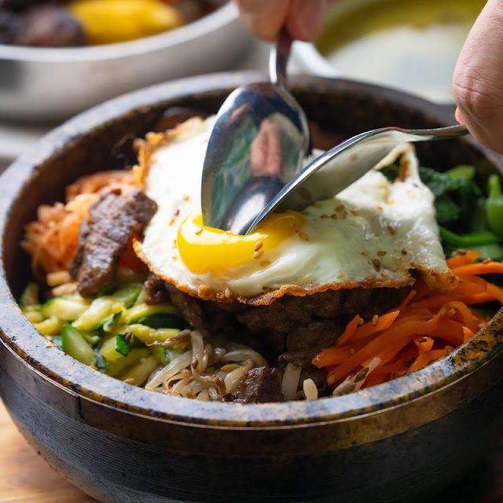
| 営業時間 | 月・火・水・木・金・土 11:00〜15:00, 17:00〜21:00 |
|---|---|
| 定休日 | 日曜 |
| 住所 | 1028 Nuuanu Ave, Honolulu, HI 96817 |
| 予約 | 推奨 — ☎ (808) 824-5536 ／ 公式サイト ／ 予約サイト |
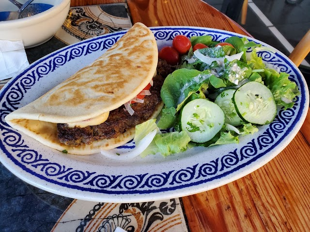
| 営業時間 | 月・火・水・木・金・土・日 17:00〜21:00 |
|---|---|
| 定休日 | なし(要最終確認) |
| 住所 | 4614 Kilauea Ave, Honolulu, HI 96816 |
| 予約 | 不可 — ☎ (808) 737-0303 ／ 公式サイト |
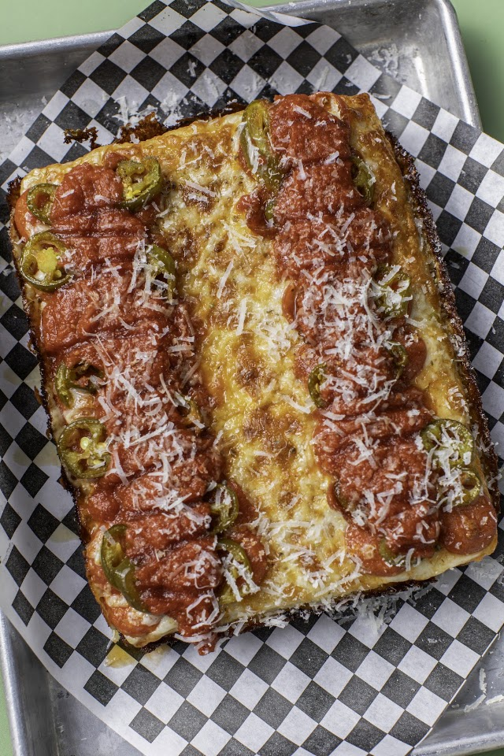
| 営業時間 | 月・水・木 11:00〜22:00 ／ 金・土 11:00〜23:00 ／ 日 14:00〜22:00 |
|---|---|
| 定休日 | 火曜 |
| 住所 | 16 N Hotel St, Honolulu, HI 96817 |
| 予約 | 不要 — ☎ (808) 369-2445 ／ 公式サイト |
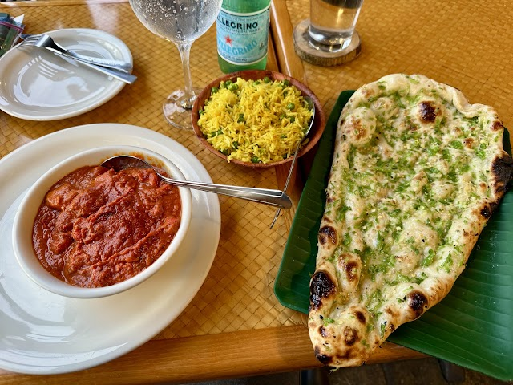
| 営業時間 | 月・火・水 11:00〜14:00, 17:00〜21:00 ／ 木・金・土・日 11:00〜14:00, 17:00〜21:30 |
|---|---|
| 定休日 | なし(要最終確認) |
| 住所 | 1137 11th Ave, Honolulu, HI 96816 |
| 予約 | 可 — ☎ (808) 735-1122 ／ 公式サイト ／ 予約サイト |
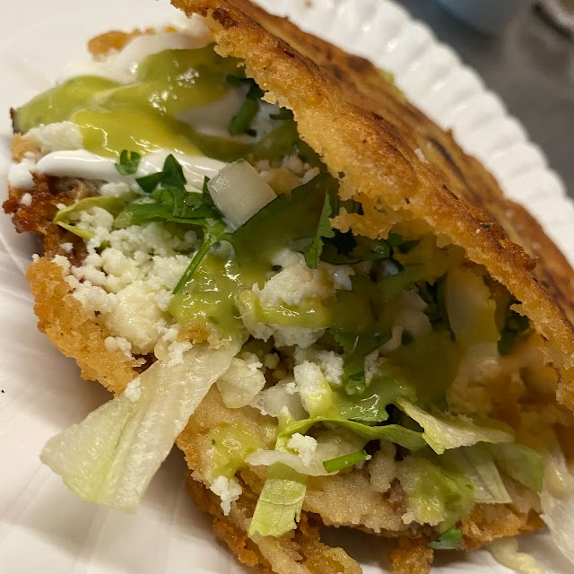
| 営業時間 | 月・火・水・木・金 11:00〜21:00 ／ 土・日 10:00〜21:00 |
|---|---|
| 定休日 | なし(要最終確認) |
| 住所 | 2740 E Manoa Rd, Honolulu, HI 96822 |
| 予約 | 不要 — ☎ (808) 988-8118 ／ 公式サイト |
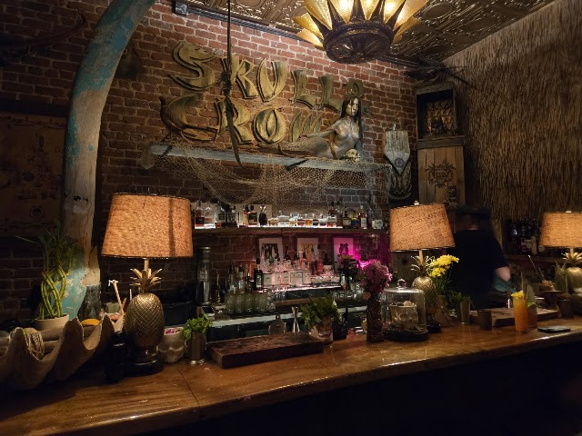
| 営業時間 | 火・水・木・金・土 17:00〜23:00 |
|---|---|
| 定休日 | 月・日曜 |
| 住所 | 62 N Hotel St, Honolulu, HI 96817 |
| 予約 | 可 — ☎ (808) 372-0620 ／ 公式サイト |
| 営業時間 | 火・水・木・金・土 11:00〜20:00 |
|---|---|
| 定休日 | 月・日曜 |
| 住所 | 50 Sand Island Access Rd, Honolulu, HI 96819 |
| 予約 | 可 — ☎ (808) 848-2800 ／ 公式サイト ／ 予約サイト |
| 営業時間 | 月・火・水・木・金・土・日 11:00〜20:00 |
|---|---|
| 定休日 | なし(要最終確認) |
| 住所 | 7192 Kalanianaʻole Hwy Bldg I, Honolulu, HI 96825 |
| 予約 | 可 — ☎ (808) 396-5662 ／ 公式サイト ／ 予約サイト |
| 営業時間 | 月・火・水・木 11:00〜22:00 ／ 金 11:00〜0:00 ／ 土 9:00〜0:00 ／ 日 9:00〜22:00 |
|---|---|
| 定休日 | なし(要最終確認) |
| 住所 | 3441 Waialae Ave Unit A, Honolulu, HI 96816 |
| 予約 | 可 — ☎ (808) 732-2337 ／ 公式サイト ／ 予約サイト |
| 営業時間 | 月・火・水・木 11:00〜0:00 ／ 金 11:00〜1:00 ／ 土 14:00〜1:00 ／ 日 14:00〜0:00 |
|---|---|
| 定休日 | なし(要最終確認) |
| 住所 | 1327 S Beretania St., Honolulu, HI 96814 |
| 予約 | 不要 — ☎ (808) 596-2779 ／ 公式サイト |
本ガイドは個人利用目的で作成。掲載情報は2026年9月時点の調査に基づく。写真出典: Google Maps投稿写真(©各投稿者/Google)。